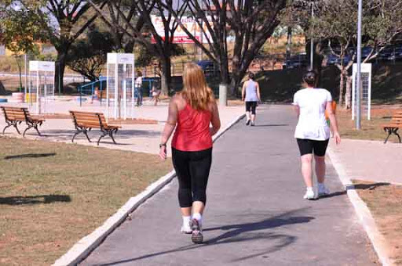

Pontos Turísticos de "Beozonte"
Em Belo Horizonte, coloquialmente pronunciado por nós moradores como Beozonte, temos pontos turísticos para quase todos os gostos, porque quem gosta de praia não tem vez aqui. Mas, se a sua "praia" for barzinhos, praças, cachoeiras, admirar paisagens e ver gente desconfiada, pode âncorar por aqui.
Barzinhos

Todo bairro, por minúsculo que seja, terá o "Barzinho do Zé", e, provavelmente, haveráuma estufa com torresmos, coxa de frango frita, ovos coloridos e uma parede de 51 e cia's. A cerveja será estupidamente gelada e o copo será o lagoinha, muito utilizado também para tomar café, porque aqui um trem serve para tudo. O Mercado Central talvez seja o ponto turístico mais famoso aí fora, traz um pouquinho de tudo em um sô lugar, inclusive os bares.
Praças
Local público com Academias da Cidade, que, durante o dia, servem para exercitarmos o corpo e, de noite, para namorar, tocar um violão, andar de patins, skate e afins. As praças que se prezam, possuim também um carrinho de cachorro quente e, as vezes, o "tio da pipoca".
Cachoeiras

As cachoeiras são lindas, de verdade, e, em sua maioria, de difícil acesso. São perfeitas para relaxar a mente, mergulhar em uma água de degelo (de verdade) e renovar as energias em meio a natureza. Apesar de ter nascido aqui, conheço poucas mas sei que existem muitas. Esse ponto turístico super vale a pena de incluir em seu roteiro.
Gente desconfiada
Mineiro é um trem muito desconfiado sô, basta um rosto diferente passar na rua para receber a ligação de um vizinho perguntado: "...uai, quem é aquele cabloco". Não aconselho perguntar se tal lugar é perto, porque sempre haverá uma resposta "é logo ali", e vai por mim, nunca é. Mas, apesar da desconfiança, é um povo muito acolhedor e te receberá com queijo, café, um pedaço de bolo e suco natural.
Enfim, é um lugar muito legal de conhecer, uma cultura muito peculiar e muito bonita. O ideal é ter um amigo para lher acompanhar na diversão pois, talvez, precisará de um tradutor para entender "Pondions", "Nu", "Nepusível".